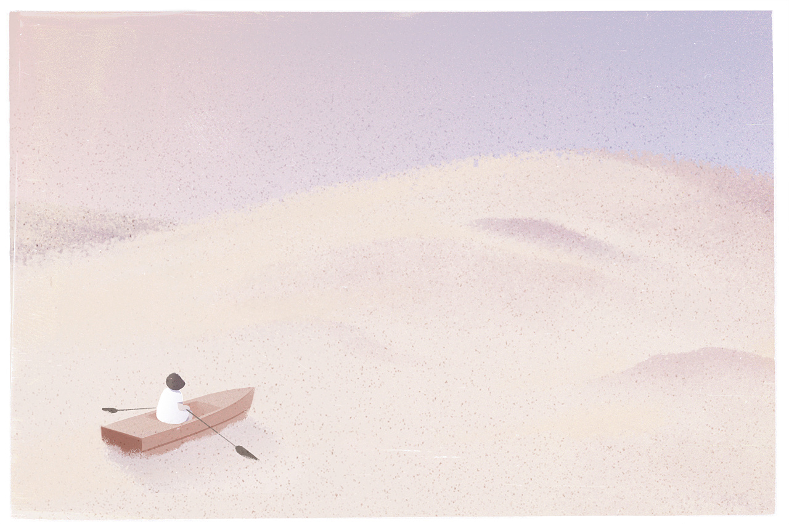

I am a senior in computer science at Simon Fraser University and studied full stack web development at Light House Lab.I used to work at Majority Labs and my job title was rails engineer.EXPERIENCE Undergraduate Research Assistant Jan 2023 - Present Simon Fraser University - Computing Science • Engineered a Gamified Learning Environment to teach Operating Systems. • Contributed to documentation and academic writing. Full Stack Rails Engineer Oct 2019 - Aug 2021 Majority Labs - Future Majority Toronto, ON • Transitioned front-end from Stimulus JS to Webpacker & React. • Increased test coverage by 50% via model, controller and end-to-end testing suites. • Remodeled system architecture from a single to multi-tenant application. Sales Associate July 2018 - Sept 2018 National Standard Vancouver, BC • Achieved Sales Targets, Overhauled Inventory Organization System and forecast product popularity. PROJECTS QOrder Built a restaurant ordering system using Node.js, ReactJS, PostgreSQL, CSS, Express, Axios which uses qr codes to join a table, order food, and split the tables bill based on what you ate. WikiMap. Built a map generator using Node.js, HTML5, Express, Ajax, EJS, PostgreSQL, Bootstrap, CSS that enables users to create and customize maps, by adding there favorite destinations and render them visually with a 360 panorama. Scheduler Built an appointment scheduling web app using Websockets, Node.js, ReactJS, PostgreSQL, CSS, Cypress, Jest, Axios which enables users to book appointments. RELEVANT COURSE WORK - CMPT 410 (Machine Learning) - CMPT 412 (Computer Vision) - CMPT 310 (Introduction to AI) - CMPT 300 (Operating Systems) - MACM 316 (Numerical Analysis)